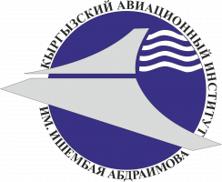

имени И. Абдраимова

РЕФЕРАТ
Элементы структуры воздушного пространства
Дисциплина: Авиационное законодательство
Студент: Жумабаева А. Ж.
Группа: СП-1-26
Преподаватель: Даиров Р. Д.
Содержание
- Введение
- Понятие и значение воздушного пространства
- Основные элементы структуры воздушного пространства
- Районы полётной информации и воздушные трассы
- Аэродромные зоны и районы управления
- Вертикальная структура и эшелонирование
- Классификация воздушного пространства
- Специальные зоны и ограничения полётов
- Организация воздушного пространства Кыргызской Республики
- Практическое значение структуры воздушного пространства
- Заключение
- Список использованной литературы
Цель работы
Изучить элементы структуры воздушного пространства, их назначение, классификацию и роль в обеспечении безопасности воздушного движения.Задачи исследования
- Рассмотреть понятие воздушного пространства.
- Изучить основные структурные элементы и их функции.
- Рассмотреть вертикальное разделение воздушного движения.
- Определить значение структуры для гражданской авиации.
Введение
Воздушное пространство является важнейшей частью транспортной системы современного государства. По нему выполняются международные и внутренние пассажирские перевозки, доставка грузов и почты, санитарные и поисково-спасательные полёты, а также другие виды авиационной деятельности.
С увеличением интенсивности воздушного движения возрастает необходимость чётко организовывать перемещение воздушных судов. Для этого воздушное пространство разделяют на районы, маршруты, зоны и участки, для которых устанавливаются границы, правила использования и порядок обслуживания воздушного движения.
Совокупность этих элементов образует структуру воздушного пространства. Она позволяет распределять воздушное движение по географическому положению, высоте и времени, определять ответственность органов обслуживания воздушного движения и устанавливать условия выполнения полётов.
Структура воздушного пространства необходима пилотам, авиакомпаниям, диспетчерам и специалистам по аэронавигации. Перед выполнением полёта экипаж должен знать маршрут, высоты, действующие ограничения, требования к радиосвязи и порядок взаимодействия с диспетчерскими органами.
В Кыргызской Республике использование воздушного пространства регулируется национальным законодательством, авиационными правилами и официальной аэронавигационной информацией. Конкретные границы и условия полётов определяются действующими публикациями.
Актуальность темы
Изучение структуры воздушного пространства актуально, поскольку правильное распределение воздушного движения связано с предотвращением опасного сближения самолётов, эффективностью работы аэропортов и соблюдением требований авиационной безопасности.
Предмет исследования: структурные элементы воздушного пространства, их функции и правила применения.
1. Понятие и значение воздушного пространства
Воздушное пространство — это пространство над определённой территорией, в котором осуществляются полёты воздушных судов и другие виды деятельности, регулируемые соответствующими правовыми нормами. Государство обладает суверенитетом над воздушным пространством над своей территорией в соответствии с международным правом.
Для организации движения необходимо учитывать не только географическое положение воздушного судна, но и его высоту, направление, скорость, погодные условия и близость аэродромов. Поэтому воздушное пространство организуется с учётом горизонтальных и вертикальных границ, а также условий и времени использования.
Основные принципы организации
| Принцип | Содержание | Значение |
|---|---|---|
| Географический | Установление боковых границ районов и зон. | Определяет, где действуют конкретные правила. |
| Вертикальный | Установление нижних и верхних границ по высоте. | Помогает разделять воздушное движение. |
| Временной | Определение периодов доступности участков. | Позволяет согласовывать разные виды полётов. |
| Функциональный | Разделение по назначению и правилам обслуживания. | Помогает применять соответствующие процедуры. |
Почему необходима структура?
Вблизи крупного аэропорта одновременно могут находиться самолёты, выполняющие заход на посадку, воздушные суда после взлёта и транзитные рейсы. Без установленных маршрутов, высот и правил координации риск конфликтных ситуаций значительно увеличился бы.
Структура делает движение более предсказуемым, помогает диспетчерам планировать потоки воздушных судов и обеспечивает согласованность действий экипажей. При этом она не заменяет диспетчерское управление и соблюдение правил полётов.
2. Основные элементы структуры воздушного пространства
Структура воздушного пространства включает взаимосвязанные районы, маршруты, аэродромные зоны и специальные участки. Их параметры зависят от национальных правил, организации воздушного движения и особенностей конкретного региона.
| Элемент | Обозначение | Назначение |
|---|---|---|
| Район полётной информации | FIR | Предоставление полётно-информационного обслуживания и аварийного оповещения. |
| Район управления | CTA | Организация контролируемого воздушного движения над установленной нижней границей. |
| Верхний район управления | UTA | Обслуживание воздушного движения в верхнем воздушном пространстве, если такой район установлен. |
| Район аэродрома | TMA | Организация потоков прибывающих и вылетающих воздушных судов. |
| Зона аэродрома | CTR | Организация контролируемого движения вблизи аэродрома. |
| Воздушная трасса | ATS route | Упорядочение движения по опубликованным маршрутам. |
| Специальная зона | По публикации | Запрет, ограничение или установление особых условий полётов. |
Обозначения FIR, CTA, UTA, TMA и CTR широко применяются в международной аэронавигации. Однако наличие конкретного элемента, его название и границы необходимо проверять по официальным публикациям соответствующего государства.
Взаимосвязь элементов
Воздушное судно может следовать по маршруту через несколько районов обслуживания, входить в район аэродрома и затем выполнять опубликованную процедуру прибытия. При переходе между участками меняются условия обслуживания и ответственность соответствующих диспетчерских органов.
3. Районы полётной информации и воздушные трассы
3.1. Район полётной информации
Район полётной информации FIR (Flight Information Region) представляет собой часть воздушного пространства установленных размеров, в которой предоставляются полётно-информационное обслуживание и аварийное оповещение.
Полётно-информационное обслуживание предусматривает предоставление сведений, необходимых для безопасного выполнения полёта. Это могут быть данные о погоде, состоянии аэродромов, навигационных средствах и известном воздушном движении. Такое обслуживание не следует путать с диспетчерским управлением.
3.2. Воздушные трассы и маршруты
Воздушная трасса представляет собой установленный коридор контролируемого воздушного пространства. Маршрут обслуживания воздушного движения определяет путь следования воздушного судна между заданными точками. На маршрутах используются опубликованные навигационные точки, направления и другие параметры.
| Параметр | Что означает | Для чего нужен |
|---|---|---|
| Начальная точка | Начало маршрута или его участка. | Определяет начало следования. |
| Промежуточные точки | Навигационные точки по пути. | Обеспечивают последовательность навигации. |
| Конечная точка | Завершение участка или переход к следующему. | Помогает организовать дальнейший полёт. |
| Эшелон | Установленная поверхность постоянного атмосферного давления. | Используется при вертикальном разделении воздушных судов. |
| Ограничения | Опубликованные условия использования маршрута. | Помогают соблюдать требования безопасности. |
3.3. Значение маршрутов для безопасности
Использование установленных маршрутов делает движение более предсказуемым. Диспетчеры могут планировать потоки, согласовывать переходы между секторами и применять необходимые меры эшелонирования. Экипажи заранее изучают маршрут и действующие ограничения.
4. Аэродромные зоны и районы управления
Особое значение имеют элементы воздушного пространства вокруг аэродромов. В этих районах воздушные суда выполняют наиболее интенсивные манёвры: набор высоты, снижение, развороты, заход на посадку и уход на второй круг.
Контрольная зона аэродрома — CTR
CTR (Control Zone) представляет собой контролируемую зону вокруг аэродрома, простирающуюся от поверхности до установленной верхней границы. Её размеры определяются с учётом расположения аэродрома, схем полётов и необходимости обслуживания воздушного движения.
Район аэродрома — TMA
TMA (Terminal Control Area) предназначен для организации движения воздушных судов в районе одного или нескольких аэродромов. Он помогает упорядочить потоки прибывающих, вылетающих и транзитных воздушных судов.
| Этап полёта | Основная задача | Что учитывается |
|---|---|---|
| Взлёт | Безопасное начало полёта и набор высоты. | ВПП, препятствия, схема вылета. |
| Вылет | Выход из аэродромной зоны на маршрут. | Разрешение диспетчера, высоты, направление. |
| Прибытие | Организация подхода к аэродрому. | Потоки движения, интервалы, схема прибытия. |
| Заход на посадку | Вывод самолёта на траекторию посадки. | Метеоусловия, навигационные средства, ВПП. |
| Уход на второй круг | Безопасное прекращение неудачного захода. | Опубликованная процедура и указания диспетчера. |
Значение аэродромных зон
Правильная организация воздушного пространства около аэродромов снижает вероятность конфликтов между воздушными судами. Она также способствует эффективному использованию взлётно-посадочных полос, диспетчерских средств и пропускной способности аэропорта.
5. Вертикальная структура и эшелонирование
Вертикальная организация воздушного пространства связана с разделением воздушных судов по высоте. Такое разделение помогает организовать встречные, попутные и пересекающиеся потоки движения.
Высота и эшелон полёта
Абсолютная высота обычно отсчитывается относительно среднего уровня моря. Относительная высота определяется относительно выбранного уровня, например аэродрома или поверхности земли. Эшелон полёта — это поверхность постоянного атмосферного давления, отнесённая к установленному значению давления по правилам высотомерной установки.
| Понятие | Определение | Пример применения |
|---|---|---|
| Абсолютная высота | Высота относительно среднего уровня моря. | Указание высоты местности или препятствия. |
| Относительная высота | Высота относительно выбранного уровня. | Оценка высоты над аэродромом. |
| Эшелон полёта | Поверхность постоянного атмосферного давления. | Разделение самолётов на маршруте. |
| Вертикальное эшелонирование | Установленный интервал по вертикали между воздушными судами. | Предотвращение опасного сближения. |
Переходная высота и переходный эшелон
Переходная высота и переходный эшелон используются для согласованного применения высотомерных установок при наборе высоты и снижении. Переход между ними выполняется по правилам, опубликованным для соответствующего района и аэродрома.
Почему вертикальное разделение необходимо?
Воздушные суда могут пересекать один и тот же географический район, но находиться на разных установленных эшелонах. Это позволяет организовывать движение по высотным уровням и эффективнее использовать воздушное пространство. Конкретные минимумы эшелонирования определяются применимыми правилами и условиями полёта.
6. Классификация воздушного пространства
Международная организация гражданской авиации (ИКАО) предусматривает классификацию контролируемого и неконтролируемого воздушного пространства по классам A, B, C, D, E, F и G. Конкретное применение классов зависит от государства и публикуется в национальной аэронавигационной информации.
| Класс | Общие характеристики по системе ИКАО |
|---|---|
| A | Допускаются полёты по ППП; всем полётам предоставляется диспетчерское обслуживание и применяются установленные интервалы эшелонирования. |
| B | Допускаются полёты по ППП и ПВП; все полёты обслуживаются диспетчерской службой с установленным эшелонированием. |
| C | Полёты по ППП и ПВП получают диспетчерское обслуживание; правила эшелонирования зависят от вида взаимодействующих полётов. |
| D | Полёты по ППП и ПВП получают диспетчерское обслуживание; применяются установленные правила управления и информирования. |
| E | Контролируемое пространство, в котором диспетчерское обслуживание предусмотрено прежде всего для полётов по ППП; требования к полётам по ПВП отличаются. |
| F | В первоначальной классификации ИКАО — консультативное обслуживание там, где оно установлено; применение зависит от действующих правил. |
| G | Неконтролируемое воздушное пространство, в котором предоставляются предусмотренные правилами виды обслуживания и действуют требования к полётам. |
ППП — правила полётов по приборам. ПВП — правила визуальных полётов. Эти правила определяют требования к выполнению полёта, навигации и метеорологическим условиям.
Почему классификация важна?
Класс воздушного пространства определяет, какие виды полётов разрешены, какое обслуживание предоставляется и какие требования действуют для пилотов. Он помогает заранее определить необходимые разрешения, оборудование и порядок взаимодействия с диспетчером.
7. Специальные зоны и ограничения полётов
Не все участки воздушного пространства доступны для свободного использования. В определённых районах могут действовать запреты, ограничения или специальные условия, связанные с безопасностью, охраной государственных объектов, военной деятельностью и проведением специальных работ.
| Вид участка | Смысл | Условия использования |
|---|---|---|
| Запретная зона | Участок, над которым полёты запрещены при установленных условиях. | Полёты допускаются только в предусмотренных официальными правилами случаях. |
| Зона ограничения полётов | Участок, в котором полёты ограничены определёнными условиями. | Необходимо соблюдать опубликованные требования и ограничения. |
| Опасная зона | Участок, где в определённое время может существовать опасность для полётов. | Экипажам необходимо учитывать сведения о её активности. |
| Временное резервирование | Выделение участка для определённой деятельности на установленный период. | Использование зависит от опубликованных условий и координации. |
Причины установления ограничений
- Проведение военных учений и специальных мероприятий.
- Защита важных государственных и инфраструктурных объектов.
- Выполнение учебных, испытательных и иных авиационных работ.
- Обеспечение безопасности в районах повышенного риска.
- Временные обстоятельства, требующие особого порядка использования пространства.
Роль аэронавигационной информации
Перед вылетом экипаж изучает актуальную аэронавигационную информацию, включая извещения NOTAM, если они относятся к планируемому полёту. В них могут публиковаться сведения о временных ограничениях, состоянии аэродромов, навигационных средствах и других изменениях.
8. Организация воздушного пространства Кыргызской Республики
Организация использования воздушного пространства Кыргызской Республики осуществляется на основе национального воздушного законодательства, авиационных правил и международных обязательств государства. Существенное значение имеют нормы Чикагской конвенции 1944 года и стандарты ИКАО.
Организация воздушного движения предполагает определение структуры районов, публикацию маршрутов, установление условий использования воздушного пространства и координацию между соответствующими службами. При этом применяются действующие документы и официальная аэронавигационная информация Кыргызской Республики.
Основные направления организации
| Направление | Содержание работы |
|---|---|
| Правовое регулирование | Установление правил использования воздушного пространства и требований к полётам. |
| Аэронавигационная информация | Публикация сведений о маршрутах, аэродромах, границах и ограничениях. |
| Обслуживание воздушного движения | Информационное, аварийное и диспетчерское обслуживание в предусмотренных случаях. |
| Координация | Согласование использования воздушного пространства различными пользователями. |
| Безопасность полётов | Предупреждение опасного сближения и соблюдение установленных процедур. |
Международное сотрудничество
Международные полёты требуют согласования маршрутов, применения общих аэронавигационных принципов и взаимодействия между органами обслуживания воздушного движения разных государств. Стандарты ИКАО способствуют совместимости процедур, терминологии и требований безопасности.
При этом международные стандарты применяются через соответствующие национальные механизмы. Поэтому при подготовке полёта нельзя заменять действующие национальные публикации общим описанием правил ИКАО.
9. Практическое значение структуры воздушного пространства
Структура воздушного пространства имеет практическое значение на всех этапах полёта. Она помогает распределять потоки движения, определять ответственность диспетчерских органов и согласовывать использование маршрутов различными воздушными судами.
Преимущества правильно организованной структуры
| Преимущество | Как достигается | Результат |
|---|---|---|
| Безопасность | Разделение потоков, применение установленных интервалов и процедур. | Снижение риска конфликтных ситуаций. |
| Эффективность | Планирование маршрутов и координация движения. | Более рациональное использование ресурсов. |
| Предсказуемость | Опубликованные маршруты, границы и правила. | Упрощение планирования экипажами и диспетчерами. |
| Координация | Определение зон ответственности и порядка передачи управления. | Согласованная работа авиационных служб. |
| Экономичность | Рациональное планирование профиля и маршрута полёта. | Возможность сокращения лишних задержек и расхода топлива. |
Пример выполнения международного рейса
- Экипаж изучает маршрут и актуальные аэронавигационные публикации.
- Воздушное судно выполняет взлёт и следует по процедуре вылета.
- После выхода на маршрут экипаж взаимодействует с соответствующими органами ОВД.
- На маршруте соблюдаются разрешения, высоты и применимые интервалы эшелонирования.
- Перед прибытием самолёт переходит к процедурам подхода и захода на посадку.
Интересный факт
10. Заключение
В ходе рассмотрения темы «Элементы структуры воздушного пространства» было установлено, что организация воздушного движения невозможна без чётко определённых районов, маршрутов, зон и правил использования воздушного пространства.
К основным элементам относятся районы полётной информации, районы управления, аэродромные зоны, воздушные трассы, маршруты обслуживания воздушного движения и специальные участки с ограничениями. Каждый элемент выполняет определённую функцию и взаимодействует с другими элементами в рамках общей системы организации воздушного движения.
Важную роль играет вертикальная структура, позволяющая распределять воздушные суда по высотным уровням. Применение эшелонирования, переходных высот и установленных процедур помогает поддерживать безопасные интервалы между воздушными судами.
Классификация воздушного пространства определяет условия выполнения полётов и виды обслуживания. При этом конкретные правила зависят от класса, национальных норм и официально опубликованных данных. Экипажам необходимо учитывать действующие маршруты, ограничения, погодные условия и указания соответствующих органов ОВД.
Для Кыргызской Республики организация воздушного пространства имеет особое значение в связи с развитием международных перевозок и горным рельефом страны. Точное планирование маршрутов, применение аэронавигационной информации и согласованная работа авиационных служб способствуют повышению безопасности и эффективности полётов.
Таким образом, структура воздушного пространства является одним из основных инструментов организации гражданской авиации. Её грамотное применение способствует безопасному, упорядоченному и эффективному использованию воздушного пространства.
Основной вывод
Безопасность воздушного движения обеспечивается совместным применением установленной структуры воздушного пространства, правил полётов, диспетчерского обслуживания, аэронавигационной информации и подготовки авиационного персонала.11. Список использованной литературы
-
Международная организация гражданской авиации (ИКАО).
Конвенция о международной гражданской авиации.
Чикаго, 1944.
Официальный сайт ИКАО -
ИКАО. Приложение 2 к Конвенции о международной гражданской авиации.
Правила полётов. Действующая редакция.
icao.int -
ИКАО. Приложение 11 к Конвенции о международной гражданской авиации.
Обслуживание воздушного движения. Действующая редакция.
icao.int -
ИКАО. Приложение 15 к Конвенции о международной гражданской авиации.
Аэронавигационная информация. Действующая редакция.
icao.int -
ИКАО. Doc 4444. Правила аэронавигационного обслуживания.
Организация воздушного движения (PANS-ATM).
Официальный сайт ИКАО -
ИКАО. Doc 8168. Правила производства полётов воздушных судов
(PANS-OPS).
icao.int -
Воздушный кодекс Кыргызской Республики.
Применимая действующая редакция и изменения.
Централизованный банк данных правовой информации Кыргызской Республики - Официальные аэронавигационные публикации Кыргызской Республики: сведения о воздушных трассах, районах, аэродромах и ограничениях воздушного пространства.